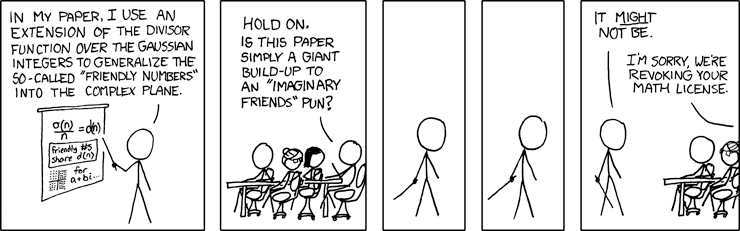

My life is a series of sleepless nights, stuck in my mind programming. I find ideas can flow freely in your own world in the peace of the night. Some nights I just need to write, mostly ideas that must be written down or writing a lengthy answer on quora. Chasing how to understand down the rabbit hole and losing track of time. However, these ideas are not complete, unless they are tangible it irks me until they are made. In this I thank my friends and family, the strangers That i came to know bonding over a shared passion. Everyone has so many ideas and it frustrates me that they are not here. This has bended me to help others make their visions come true. Scouts, teachers, a stranger that came to me learn, all coming together to work on something that embodies our shared love to create. I hope this website can give you insight to what I have done.
Rock Climbing is one of my favourite activities. It is where I can set my mind to a challenge to overcome. Boulder at the New Jersey Rock Gym, I have learned that climbing normally is climbing a route, bouldering is climbing a problem. Whenever I find myself tense I tend to cook. Some of my favourite recipes is homemade ramen in a broth that took at least 6 hours of boiling. However, when I need to study I bake, the time between letting the bread rise allows the information to flow through. I like camping, but I adore backpacking due to the freedom on top of a mountain. To be focused I cut out all consumption without purpose to give myself more time, still I lose sleep trying to find time. However when with friends, we have fun, we like to play cards and couch games.
Programming After discovering my true love for computer science the end of my sophomore year I dove into programming. I bought a book about Java, spending my summer nights in a cabin in Maine on my mother’s craptop just programming. I took the ambitious move from hello world to battleship. From there I read Effective Java and Intro to Algorithms CLRS published by MIT. App development, game development to websites and algorithms. Due to my efforts I was able to skip over VB2,JAVA and took AP Computer Science A. On the first day I saw that everyone in that classroom was someone who I respected. From there I have spent my time refining my skills, not sleeping, and working hard.
I am the president of co-founder of the computer science club. Coming back junior year I was approached by an old friend hearing my interest in programming. Dylan was ecstatic once he saw what I saw, the possibility to make any idea tangible. He asked me to teach him how to program and he became my first student. We stayed after school Monday through Thursday until five(Fridays we needed a break). Soon the word spread and others came too to learn but also to create. Friends, strangers, it did not matter we were all family after a short while bonding over pizza. There I set out to teach anyone willing to learn. We officially became a club when we learned you can get half off pizza for clubs, but that is a complete other story. Now we have over 25 members still going strong with multiple projects and learning sessions during lunch and after school.Currently I am a Teacher's Assistant in AP Computer Science and also apart of the IT internship program with the school for the second year. Outside of class I mentor multiple kids who have come to me to learn. I want to express how I have been completely captured by my students, the satisfaction from teaching is breathtaking. I have come to be proud of my students and excited everyday to create a lesson plan or a lecture: theory, math, programming. But I can't express it completely except for the creative uniqueness that is shown in each individual student; the unique perspectives gained from each student. As my Envi Sci teacher, Lovett would say ‘To be the best student become a teacher’. So to best express this feeling the class was given a random number and had to tell if it was a prime number. One of my students had problems with truncating integers and did not want help. So he created a nifty way of doing it. I sat down to look at his code because he had an error and I thought it looked familiar. I bounced off the seat when I figured out it was the sieve of Eratosthenes. What a way to stumble upon an ancient algorithm. All in all, teaching fulfills me when someone lights up over knowledge.
